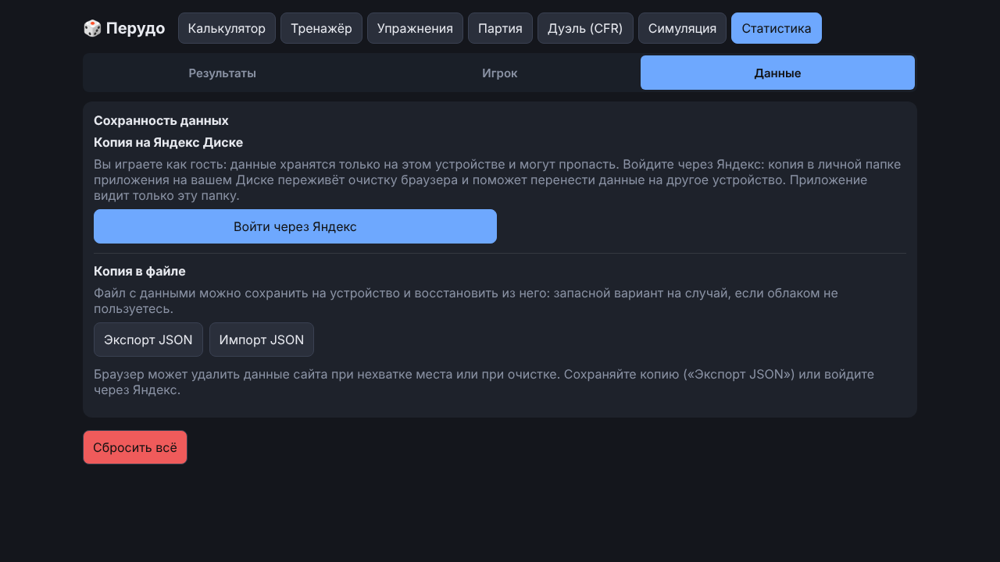

Руководство / Ваши данные
Ваши данные
Где хранится ваша статистика, как её сохранить и перенести на другое устройство. Всё это находится на вкладке «Статистика», в части «Данные».

Часть «Данные» содержит блок «Копия на Яндекс Диске», блок «Копию в файле» (экспорт и импорт JSON) и подсказку про защиту от автоочистки браузера. В самом низу, отдельно, стоит «Сбросить всё»: она стирает статистику, очередь повторов, статистику Дуэли, память ботов и профиль игрока (с подтверждением).
Где хранятся данные
- Статистика, история партий, настройки, память ботов о вашей игре, имя и аватар игрока и записи ваших решений в партиях хранятся только в вашем браузере. Записи решений — это счётчики по типам ситуаций и до трёх самых важных моментов каждой законченной партии, всего не больше 50.
- Если вы играете как гость, приложение ничего никуда не отправляет и не требует аккаунта. При входе через Яндекс копия данных дополнительно записывается на ваш Диск.
- Если открыть приложение в другом браузере, на другом устройстве или в режиме инкогнито, статистики там не будет. Если очистить данные сайтов в настройках браузера, она тоже пропадёт.
Копия на Яндекс Диске
При первом запуске приложение спрашивает, как вы будете играть:
- «Войти через Яндекс»: копия ваших данных хранится на вашем Яндекс Диске. Она переживёт очистку браузера и поможет перенести данные на другое устройство.
- «Играть как гость»: данные хранятся только в этом браузере. Выбор можно сменить позже: «Статистика» → «Данные».
Как это устроено
- Что и куда пишется. Один файл
perudo-backup.jsonв личной папке приложения на вашем Диске: та же копия, что и «Экспорт JSON». Приложение получает право только на эту папку и остальные файлы Диска не видит. Данные не уходят ни на какой другой сервер: запросы идут из вашего браузера напрямую на Яндекс. Токен доступа хранится только на этом устройстве и в файл копии не входит. - Когда пишется. После каждой законченной партии (не чаще раза в 30 секунд) и по кнопке «Сохранить сейчас».
- Другое устройство. После входа с другого устройства приложение сравнивает версии. Если на этом устройстве ничего не менялось, а в облаке копия новее, данные обновляются сами. Если версии разошлись, вы выбираете, какую оставить. Данные не теряются без вашего подтверждения.
- Если связь не работает. Кнопка «Диагностика связи» собирает короткий отчёт (без токена и без ваших данных). Его можно скопировать и отправить в Issues на GitHub.
- Выйти и удалить. Кнопка «Выйти» убирает вход на этом устройстве: данные на устройстве и файл на Диске остаются. Чтобы удалить копию совсем, удалите файл
perudo-backup.jsonиз папки приложения на Диске. Доступ приложения можно отозвать в настройках вашего аккаунта Яндекса.
Уведомления. Итог входа, обновление данных и ошибки облака показываются полосой под шапкой: она сдвигает страницу вниз и ничего не перекрывает. Справа есть кнопка «✕» (закрывает и клавиша Esc, если не открыто окно). Информация скрывается сама через 7 секунд, ошибки и просьбы выбрать остаются, пока вы их не закроете. Выбор «Играть как гость» уведомления не вызывает.
Копия в файле
- Сохранить: «Статистика» → «Данные» → «Экспорт JSON». Получится файл
perudo-backup-ГГГГ-ММ-ДД.jsonсо всеми данными: статистикой Тренажёра, очередью повторов, историей партий и разборами, статистикой Дуэли, настройками, профилем, прогрессом обучения, характерами и памятью ботов. - Восстановить: «Статистика» → «Данные» → «Импорт JSON» и выберите файл. Приложение проверит файл и спросит подтверждение: текущие данные заменяются данными из копии, после чего страница перезагружается. Если файл чужой, повреждён или сделан более новой версией, вы получите понятное сообщение, а ваши данные не изменятся. Файлы старого формата (версия 1) тоже читаются.
- Начать с нуля: «Статистика» → «Данные» → «Сбросить всё». Память ботов и записи решений тоже очищаются. Забыть только вашу игру можно кнопкой в настройках партии.
Проверка данных
Всё, что приложение читает из браузера, из файла копии и из облака, проходит единую проверку: лишние и испорченные поля отбрасываются, счётчики приводятся к допустимым значениям. Если в файле часть записей повреждена, при импорте они пропускаются, а приложение сообщает, сколько их было. Остальные данные восстанавливаются. Файл отклоняется, только если из него не удалось прочитать ни одного раздела. Та же проверка применяется при экспорте и отправке в облако, поэтому повреждение не расходится по устройствам.
Защита от автоочистки и напоминания
- После первой и после пятой партии приложение просит браузер не удалять данные сайта само. Решает браузер, а в «Статистика» → «Данные» показано, защищено ли хранилище. Это не защита от ручной очистки: копия в файле остаётся главным способом сохранить данные.
- После пятой партии в итоге партии появляется предложение сохранить копию. «Позже» откладывает его ещё на 20 партий, после экспорта оно молчит 30 партий. Когда напоминать, хранится отдельно и в копию JSON не входит.